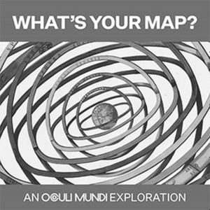

Trade Mark Journal No.2025/012 21 March 2025
WO0000001842959 (9,16,18,25,38,41)
Office of origin: Switzerland
Date of International Registration:8 November 2024
Date of designation in the UK:
8 November 2024

International priority date claimed: 21 October 2024
(Switzerland)
(821824)
- Class 9
- Downloadable podcasts; electronic publications recorded on computer media; digital books downloadable on the Internet and geographical maps; downloadable e-books and geographical maps.
- Class 16
- Printed publications; geographical maps; books; atlases; periodicals; postcards; posters; bookbinding material; photographs; instructional or teaching material.
- Class 18
- Handbags; briefcases (leather goods), document cases; multi-purpose bags; beach bags; book bags; reusable shopping bags.
- Class 25
- Clothing; footwear; headwear.
- Class 38
- Broadcasting and transmission of radio programs; transmission by radio; providing information with respect to broadcasting; transmission of podcasts; providing telecommunication services for e-commerce platforms on the Internet and other electronic media; communication by electronic means; discussion forum services for social networks.
- Class 41
- Podcast production; provision of electronic publications; electronic publication of information on a wide range of topics on-line; publication services; online digital publication services; production of films, video films, production of radio and television programs; publication and editing of printed matter, books, newspapers and periodicals, other than for advertising purposes; dissemination of educational material; hosting of entertainment, cultural and sports events live, educational events and entertainment and cultural activities; arranging and conducting of meetings in the field of education; organization and performance of shows; training; entertainment; arranging and conducting of tutorials, conferences and exhibitions; arranging and conducting lectures; museum services; presentation of exhibitions in museums.
Adinvest AG
Representative: Wenger & Vieli AG, Dufourstrasse 56,, Postfach, CH-8034 Zürich, SWITZERLAND